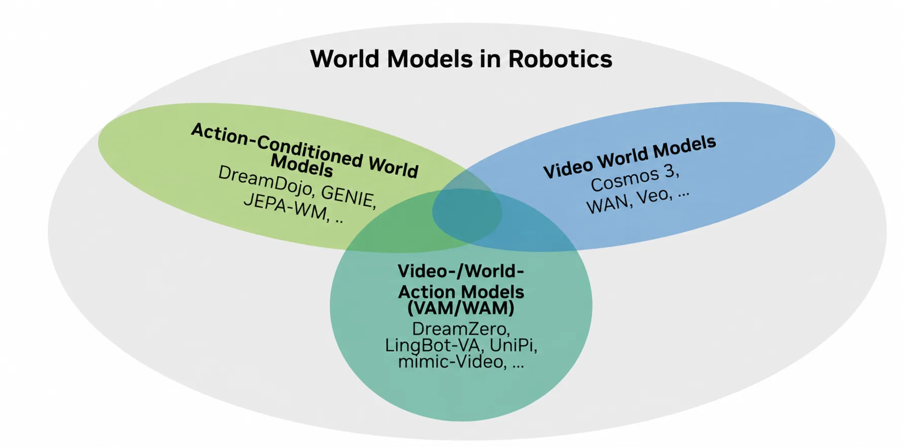
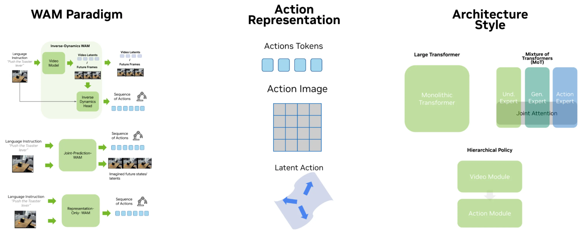
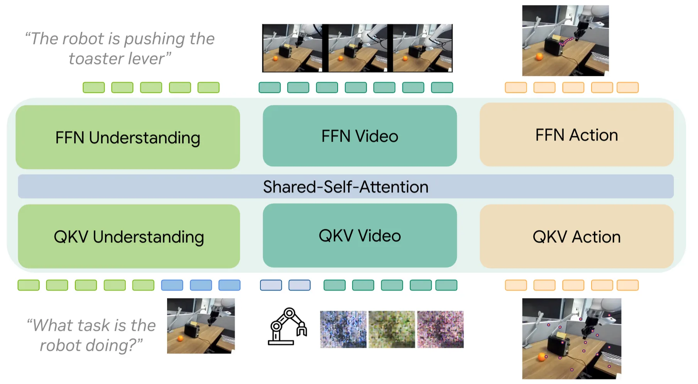

Survey Reading · Robotics World Models
World-Action Models：为什么“先想象，再行动”正在变成机器人基础模型的第二条路线
NVIDIA 这篇博客不是提出一个新模型，而是给 2026 年 WAM 研究画了一张实用地图： VLA 从 VLM 出发，WAM 从 video/world-model backbone 出发。前者擅长语义，后者押注“语言到视觉变化”的先验能缩短“语言到动作”的距离。
0. 一句话结论
痛点：VLM-based VLA 已经把视觉-语言预训练用进机器人，但仍要从有限机器人数据里学习“语言和像素如何变成物理动作”，这个 grounding gap 很顽固。 核心招：WAM 换一个起点：从 pretrained video/world model 出发，让模型先具备“语言条件下世界怎么变化”的先验，再微调成能输出动作的 policy。 效果：DreamZero、LingBot-VA、Cosmos Policy、Fast-WAM 等结果显示这条路线有真实信号，尤其在 robustness、visual subgoal、future-state representation 上有吸引力。 代价：视频 token 长、训练贵、推理慢，benchmark 还不统一；目前更像第二条强路线，而不是 VLA 的直接替代。
- 这篇到底在解决什么
- 它在回答：WAM 是不是机器人基础模型的新范式，为什么 2026 年突然起来，以及我们应该按什么设计轴读这些论文。
- 核心 insight
- WAM 的核心不是“生成好看的未来视频”，而是把 instruction → desired visual change → action 这条链拆开。先把语言 grounding 转移到 future-state prediction，再用 inverse dynamics 或 joint denoising 得到动作。
- 我对原文的判断
- NVIDIA 原文的立场是克制的：WAM 会成为 VLA 之外的第二个主 recipe，但最终大概率是 VLA+WAM hybrid，而不是某一边赢掉另一边。

1. 论文/博客定位
这是一篇 WAM survey + position piece，不是单篇方法论文。 它把当前机器人 foundation policy 的主流路线拆成两种 representation bet：
| 路线 | 预训练起点 | 核心假设 | 代表方法 |
|---|---|---|---|
| VLM-based VLA | image/text VLM | 视觉-语言语义能迁移到控制 | Pi-0、Pi-0.5、GR00T N1、Xiaomi-Robotics-0 |
| Video-backbone WAM | video/world model | 语言到视觉变化的先验能缩短 action learning | DreamZero、LingBot-VA、Cosmos Policy、Fast-WAM |
| Hybrid | VLM + video + action expert | 语义理解、未来想象、动作生成应该分工但互通 | Motus、BagelVLA、Pi-0.7、Cortex 2.0、Being-H0.7 |
原文的中心问题是：WAM 是真正的范式变化，还是一轮短期 hype？ 作者的答案接近：WAM 会成为机器人基础模型的第二大 recipe，但目前还没有统一范式；赢家很可能不是纯 VLA 或纯 WAM，而是 hybrid。
2. 方法总览：WAM 的三轴 taxonomy

current observation o_t + language instruction l
-> video/world backbone
-> one of three policy formulations:
1. inverse dynamics: predict future state, then infer action
2. joint prediction: predict future state and action together
3. representation-only: use video backbone features, skip test-time video
-> one of three action interfaces:
action tokens / action-as-image / latent action-plan
-> one of three architecture wrappers:
hierarchical / monolithic / Mixture-of-Transformers用一个统一公式看，WAM 都在试图学习： \[ \pi_\theta(a_{t:t+H}\mid o_t, l, h_t), \] 其中 \(h_t\) 不是普通 VLM hidden state，而是来自 video/world-model backbone 的时空表征、未来 latent、视觉子目标或 latent plan。 关键分歧在于：\(h_t\) 是否显式生成未来视频、是否和 action 一起 denoise、推理时是否保留生成过程。
3. 关键观点一：WAM 试图绕开 VLA 的 grounding gap
旧方法为什么不行：VLA 从 VLM 出发，VLM 知道“红色杯子”是什么意思，但它没有在预训练中学过如何通过手臂轨迹让杯子移动。 机器人 action learning 仍然依赖有限 demonstration，容易灾难性遗忘或学到 spurious correlation。
WAM 怎么改：把语言 grounding 先映射成视觉变化。与其直接从“拿起杯子”预测关节动作，不如先让 video model 想象“杯子被拿起后的视觉状态”，再从当前帧到未来帧做 inverse dynamics。
为什么可能有效：大规模视频预训练天然包含手、工具、物体、场景随意图变化的模式。即使它不能控制机器人，也可能已经学到“语言描述的动作会造成什么视觉后果”。
代价/限制：视频模型的 prior 可能是“看起来合理”，不是“对当前硬件可执行”。原文用 Veo 3.1 toaster 示例说明：模型能生成顺滑动作和正确大致顺序，但会把夹爪形态、自由度、物理接触细节想错。
4. 三种 policy formulation
4.1 Inverse dynamics：先预测未来，再反推动作
形式上： \[ \hat{o}_{t+1:t+K}=W_\phi(o_t,l),\qquad \hat{a}_{t:t+K}=D_\theta(o_t,\hat{o}_{t+1:t+K}). \] 这里 \(W_\phi\) 是视频/世界模型，\(D_\theta\) 是 inverse dynamics action head。
优点是边界清楚：video model 负责把语言变成视觉未来，action head 只学从视觉转移到动作。 缺点是两阶段耦合弱，未来视频一旦 hallucinate，动作 head 会跟着错。
| 早期代表 | 现代版本 | 核心变化 |
|---|---|---|
| UniPi：文本条件视频生成 + inverse dynamics | LingBot-VA：Wan 2.2-5B + MoT action expert | 从 scratch CNN diffusion 变成 open video DiT；从开环视频变成因果长历史闭环 rollout |
| Video as plan | VPP / mimic-video 使用中间 video features | 不一定要 decode RGB，future representation 可以只作为 action condition |
4.2 Joint prediction：未来状态和动作一起预测
形式上： \[ (\hat{o}_{t+1:t+K}, \hat{a}_{t:t+K}) =F_\theta(o_t,l,\epsilon_o,\epsilon_a). \] 在 diffusion/flow 里，video tokens 和 action tokens 可以一起 denoise。
优点是视频和动作强耦合；缺点是同一模型要同时处理稠密视频 token 和稀疏动作 token，优化目标更难平衡。 原文把 GR-1 视作早期 joint-prediction 版本，把 DreamZero 视作现代 scaled version：Wan 2.1 I2V 14B backbone，视频和动作 token 在一个 monolithic DiT 里联合生成。
NVIDIA 原文引用 RoboArena April 2026 snapshot：DreamZero 得分 1750，高于 Pi-0.5 的 1622。这是 WAM 真实世界潜力的信号，但不是 WAM 全面胜过 VLA 的证明。
4.3 Representation-only：推理时不生成未来视频
Fast-WAM 是这条线的代表。它保留 video backbone 的 representation prior，但推理时跳过 full future video generation： \[ h_t=E_{\text{video}}(o_{\leq t},l),\qquad \hat{a}_{t:t+H}=A_\theta(h_t). \]
这条路线的好处非常现实：更快、更省显存，也更像一个可部署 policy。 但原文也指出：Fast-WAM 是少数公开证据之一，而且主要是模拟结果；representation-only hypothesis 还需要更多真实世界验证。
5. 三种 action integration
| 接口 | 做法 | 优点 | 风险 |
|---|---|---|---|
| Default action tokens | 把连续/离散 action chunk 当作另一类 token，接 action head | 直接、通用，兼容多数 policy | action token 和 video token 分布差异大，微调会扰动 backbone |
| Action as image / latent frame | 把 action/proprio/value 编成视频模型原生能 denoise 的图像或 latent frame | 少破坏 video backbone 的接口 | action 解码可能绕，空间平均/视觉目标不一定精确 |
| Latent action / plan | 把未来行为压成 latent plan，推理时先预测 latent 再解码动作 | 压缩长程意图，降低视频生成成本 | latent 语义难解释，连接到低层控制仍需监督 |
这里和你之前关心的 intent token 很接近：latent action / plan 本质上是在找一个中间变量 \(z\)，让它同时比低层 action 更抽象、比自然语言更贴近可执行行为： \[ q_\phi(z\mid o_{t:t+K},a_{t:t+K}) \quad\text{or}\quad q_\phi(z\mid video), \qquad \pi_\theta(a_{t:t+K}\mid o_t,l,z). \]
6. 三种 architecture
| 架构 | 代表 | 机制 | 判断 |
|---|---|---|---|
| Hierarchical | UniPi、VPP、mimic-video、Pi-0.7 subgoal | video/world module 先产出 future/feature/subgoal，action module 再执行 | 最模块化，最容易替换，但耦合弱 |
| Monolithic | DreamZero、Cosmos Policy | 一个 DiT 同时 denoise video/action/proprio/value | 耦合强，但优化和系统成本最高 |
| Mixture-of-Transformers | LingBot-VA、Fast-WAM、现代 VLA | video expert/action expert 分权重，通过 shared attention 交换信息 | 原文认为最可能成为主流折中 |

7. 为什么是现在
WAM 的想法并不新。UniPi、GR-1、Play-LMP 都已经有雏形。真正变化是基础设施成熟：
- 视频模型强了：Wan、Cosmos 这类 DiT/flow-matching video backbone 比早期 CNN video diffusion 更可用。
- 开放权重出现了：研究者不必从零训练视频基础模型，可以直接 fine-tune video prior。
- 动作侧也成熟了：action chunk、flow matching、discrete action tokenizers、MoT action expert 都比早期 per-step head 更稳定。
- 机器人数据变大了：DROID、AgiBot、egocentric human video、cross-embodiment 数据使 WAM fine-tuning 不再只是小 demo。
原文脚注里给了一个很重要的 compute 视角：UniPi 早期从零训练 CNN video diffusion 的估算约 167 ZFLOPs，这解释了为什么想法早有但没有变成主流。 现在的核心变化不是概念新，而是 video foundation model 把前置成本外包掉了。
8. 成本、速度和现实阻力
WAM 的最大现实问题是：视频 token 太贵。 原文用下界估算 \(C \approx 6NT\)，其中 \(N\) 是 trainable dense parameters，\(T\) 是训练 token 数。 这不是精确 wall-clock 成本，而是对比不同路线的数量级工具。
| 路线 | 原文给出的数量级 | 该怎么读 |
|---|---|---|
| VLA Foundry final VLA/action stage | 约 0.56 ZFLOPs | 只算最终 action training，不含 LLM/VLM pretraining |
| DreamZero WAM action tuning | 约 8.6-9.0 ZFLOPs | 只算 Wan-14B 下游 WAM adaptation，不含 Wan 预训练 |
| Illustrative Wan-14B full WAM stack | 约 51 ZFLOPs | 用 Summer-22B token 规模做代理估计，不是 paper-reported DreamZero 总成本 |
| Summer-22B video pretraining | 约 66 ZFLOPs | 说明从零训练强 video model 的成本很高 |
推理也慢。原文引用 Fast-WAM 的参考：full video generation 的 joint/inverse WAM 每个 action chunk 约 590-800ms，而 Pi-0.5 约 190ms。 对实时控制来说，3-4 倍 slowdown 很关键。这也是 Fast-WAM 这类 representation-only 方法值得关注的原因。
9. 批判复盘
证据强的部分：WAM 作为研究方向确实有信号。DreamZero 的 RoboArena snapshot、Fast-WAM 的速度/模拟表现、Pi-0.7 的 visual subgoal ablation、Cortex 2.0 的 planning-by-foresight 都说明“future/state prior”对 policy 有用。
证据弱的部分：当前 WAM 论文之间不容易公平比较。它们换 backbone、数据规模、benchmark、action interface、training recipe，很多 improvement 混在一起。
隐藏 confound：如果 WAM 起点是一个昂贵的 video backbone，那么“WAM 更好”可能部分来自更强视觉/视频预训练，而不是 world-action formulation 本身。
【不确定】WAM 的收益到底来自 future prediction objective、video backbone 预训练、还是更大的数据/模型规模？三种合理解释都存在。验证方式：同 backbone 下只改 objective；同 compute 下比较 VLA/WAM；同数据下做 video-prediction auxiliary loss ablation。
【不确定】representation-only WAM 是否能在真实机器人上替代 test-time imagination。Fast-WAM 是重要证据，但目前公开证据仍偏模拟。验证方式：真实 DROID-like manipulation、长程任务、OOD 物体/背景、matched latency 评测。
10. 对 FastWAM / 具身操作的启发
对你正在想的 WAM/动作建模，这篇的结论很直接：
- 不要只问“要不要生成未来视频”。更关键是 future-prediction 表征是否真的帮助 action head。Fast-WAM 的价值就在于把 test-time video generation 拿掉，只保留有用 representation。
- intent token / latent plan 是很自然的中间层。它可以位于语言和 action chunk 之间，也可以位于 video prediction 和 action decoding 之间。
- co-training 很重要。原文指出 DreamZero 和 Fast-WAM 都显示：robot fine-tuning 时 action learning 和 video-prediction objective 一起训更好。
- 速度是部署硬约束。如果一个 WAM 每 chunk 600-800ms，它更像 planner 或 teacher；要做 real-time policy，需要 representation-only、distillation 或 cache/step reduction。
- VLA baseline 不能忽略。现代 VLA 的离散 action tokenizer、gradient isolation、VLM co-training 已经很强，WAM 必须和这些 recipe 公平比较。
11. 可复现清单
- 固定 backbone：同一个 VLM 或同一个 video model，避免 backbone 差异淹没 formulation 差异。
- 固定 robot data：DROID/LIBERO/RoboTwin/CALVIN 等任务划分要完全一致。
- 报告 action chunk latency：不要只报 success rate。
- 报告是否生成视频：test-time imagination、latent-only、representation-only 要分开。
- 报告 video objective 权重：future prediction auxiliary loss 往往是关键变量。
- 明确 action interface：continuous token、discrete token、latent frame、latent plan 不要混称。
- 做 matched compute ablation：WAM token 多，不能只按 epoch 比。
- 做 real-world OOD：模拟鲁棒性不足以证明 WAM 迁移。
- 记录训练数据 mixture：video-only、robot-only、co-training 的比例会明显影响结果。
- 把 failure video 保存下来：WAM failure 往往是物理 hallucination、目标实例错、硬件形态漂移。
12. 速读备忘卡
- WAM = 用 video/world-model backbone 做机器人 policy。
- VLA 从语言-视觉语义出发，WAM 从世界动态先验出发。
- WAM 的目标是缩短 language-to-action grounding gap。
- 三种 formulation：inverse dynamics、joint prediction、representation-only。
- 三种 action interface：action tokens、action-as-image、latent action/plan。
- 三种 architecture：hierarchical、monolithic、MoT。
- MoT 是当前最实用折中：专家分权重，共享注意力耦合。
- Fast-WAM 的关键是推理时不生成未来视频。
- WAM 的硬伤是训练贵、推理慢、benchmark 不统一。
- 下一代很可能是 VLA+WAM hybrid，而不是纯路线互相取代。
Sources
- NVIDIA Technical Blog: Pretrained to Imagine, Fine-Tuned to Act
- Fast-WAM: Do World Action Models Need Test-time Future Imagination?
- Cosmos Policy: Fine-Tuning Video Models for Visuomotor Control and Planning
- DreamZero / World Action Models Are Zero-shot Policies
- LingBot-VA / Causal World Modeling for Robot Control